What is ng-id?
ng-id
ng-id is how we preserve your HTML elements between updates from Webflow to Angular 2. However at the moment, ng-id is actually a pseudo custom attribute as it implemented as the id value alone and not in the custom attributes area. This method is simpler to utilize. This page will show you how to use the id tag itself, a very important part of the FreeFormJS process as it is used to preserve your Angular 2 HTML code between updates.
Step by step:
- The first thing you need to do is identify a section of your screen that you'd like to preserve. For example a main menu item.
- Inside the web page select the element you'd like to add an id too!
- Simply put a name in the id field.
- HTML also has a name field along with the id field. In Webflow, it may try to make the two of these different. It's a good idea to make sure both the name field and the id field are the same, but it's not necessary for conversion. It may only become an issue with Angular 2 to have a different value inside the name attribute as oppose to the id attribute.
Caution:
Changing the value of the id field inside the Webflow editor after you have added custom attributes inside Angular 2 will result in confusing FreeFormJS when it comes to updating your Angular 2 code. As with anything else, you should be making regular backups, even hourly backups of your Angular code as a fall back to a situation like this. In any event, it is safe to change the value of the id field inside the Webflow project provided you also make a change to the Angular 2 code with the same id value before you do your update. Any tags inside in the Angular code that does not have an id that FreeFormJS recognizes from Webflow and the code is automatically removed without warning!
In WebflowIn Angular 2In TypeScript


In Webflow:
The first thing you need to do is identify what needs to have an id. Take for example the FORWARD button:
Highlight the FORWARD button using Webflow's editor:
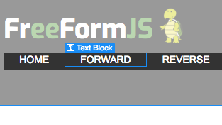
With the selected button highlighted you will see the item also selected in your right panel. In this particular case, you want to actually select the Link Block associated with the menu item.
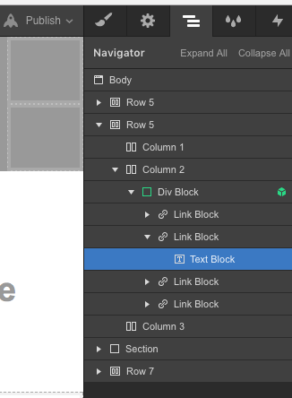
Adding an id to either will work, but for simplicity you may want to use the Link Block instead of the button. It's a choice you can make, in this example we use the Link Block:
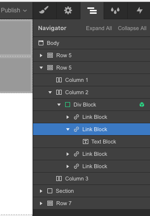
Once there, simply add a value to the id field and you are done!
In Angular 2:
Before the id's are added the HTML code inside your Angular 2 project will look like this:
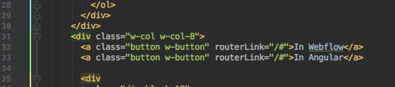
After you add the id's your code will be transformed into something like this:
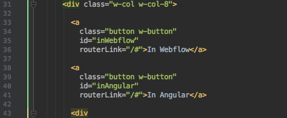
While it's not necessary for this example, we just happen be using a <button> here but Webflow uses <a> tags for buttons. As an option you might like to use the actually <button> tag. If you plan on disabling the button at some point, it's no longer an option, you need to morph the <a> tag into a <button>. To do this simply add the ng-morph attribute:
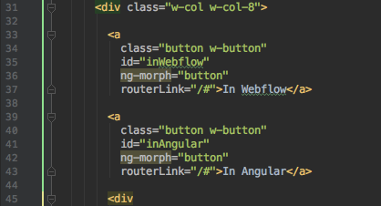
Do another download from Webflow and then FreeFlowJS and notice how ng-morph has updated your <a> tags to <button> tags.
Also notice that there are no href attributes. The href attibutes of the <a> tag have been converted into the routerLink of Angular 2 for you:
Sometimes however, you do not need either the href nor the routerLink. Sometimes you just need the <button> to be a <button> where you'll add a standard Angular 2 (click) attribute instead. To disable the routerLink all you have to do is add a '_' in front of the routerLink attribute.
Usually you do this because the button is going to be used for a (click) operation as such:
In TypeScript:
The whole essence of converting your Webflow HTML code into Angular 2 CLI is to take advantage of TypeScript. This is a perfect example of why you would want to do that:
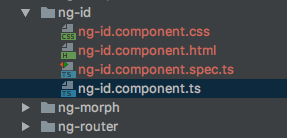
Inside ng-id.component.ts you find the default values as generated for you by FreeFormJS:
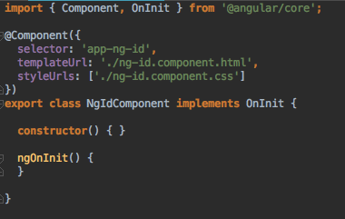
Inside the HTML code we added two Angular 2 style (click) events:
Inside the TypeScript code for this component you now want to add the events themselves:
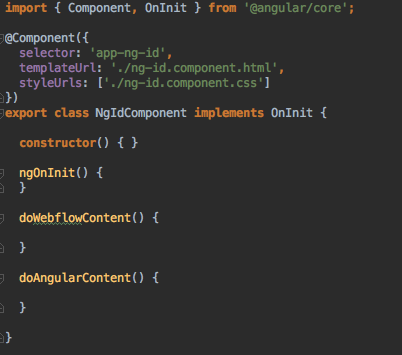
In this particular application, this very page to be precise, we need to toggle certain portions of the page. To do this we will add the *ngIf element of Angular 2:
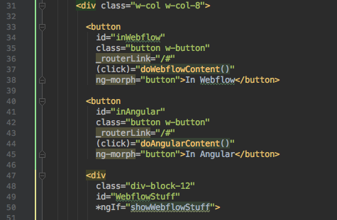
More precisely you'll see the *ngIf applied to another <div> the one determining the display of the content inside that <div>:
With Angular 2 CLI, all you need to now is associate the state of the 'showWebflowStuff' with the (click) method assigned to the <button>:
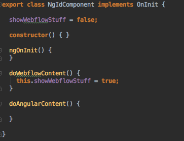
Had there been only two items to select you could have easily just used the inverted value of one flag here ( we are strong believers in 'less code is more code' ):
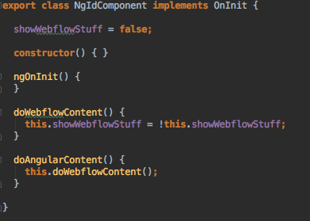
However, because we actually have THREE tabs to show now, the proper coding looks like this for the HTML code:
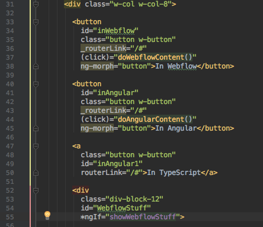
You should notice something odd. We appear to have two id's with the same value, but they are not the same value. They differ by one number. Can you see it? It's the id for the TypeScript item. It's the same as the id for the Angular menu item but it has the number 1 added to it. This is also a default behavior of FreeFormJS, it automatically assigns a new id whenever it finds a duplicate. Also, the completed code is below:
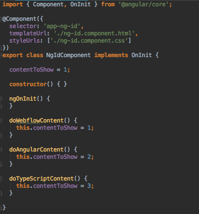
The following is the updated HTML code for this component:
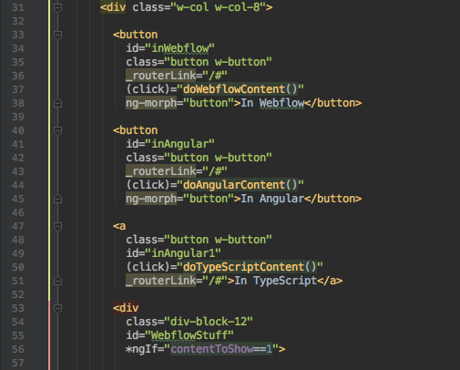
In our rush to put together this page, we overlooked the ng-morph for the TypeScript menu item. Simply add the ng-morph attribute and do another download and conversion:
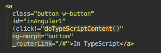
The morphed code now becomes:
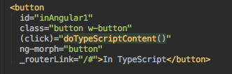
The completed code now looks like this:
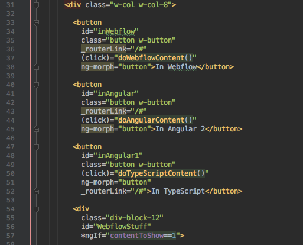
On the subject of 'less code is more code' it could be argued that since changing a flag is so minor, you could easily do it inside the HTML file itself:
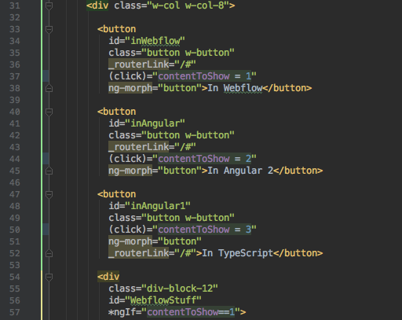
That will certainly work but in light of the fact that we have a .ts file generated for us automatically, we may as well make use of it. It all depends upon your coding style. FreeFormJS works with it, either way!
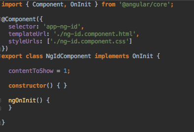
The important point here though is that you are able to now to use Webflow to program with Angular 2 with all of your behaviour and attributes stored in either a .html, .css or .ts file quickly and easily in one neat location for each component. This is what FreeFormJS is meant to do for you!